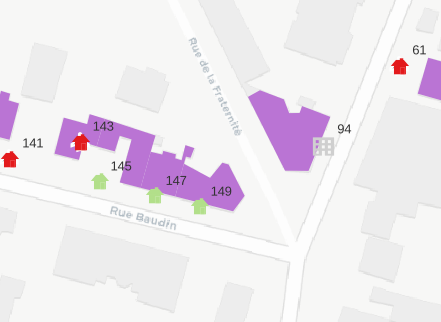

library(sf)# lecture de la couche filtrée (issus de m3_prescription_surf)carte <-st_read("data/patrimoine.gpkg", "patrimoineFiltre2154")
Reading layer `patrimoineFiltre2154' from data source
`C:\Users\geographie1\coursP8\data\patrimoine.gpkg' using driver `GPKG'
Simple feature collection with 719 features and 3 fields
Geometry type: POLYGON
Dimension: XY
Bounding box: xmin: 661185.3 ymin: 6865576 xmax: 663328.2 ymax: 6868708
Projected CRS: RGF93 v1 / Lambert-93
Code
# nb d'élémentselementsCarte <-length(carte$LIBELLE)# lecture de la couche issue du tableau de la M3geocodage <-st_read("data/patrimoine.gpkg", "geocodageM3")
Reading layer `geocodageM3' from data source
`C:\Users\geographie1\coursP8\data\patrimoine.gpkg' using driver `GPKG'
Simple feature collection with 652 features and 20 fields
Geometry type: POINT
Dimension: XY
Bounding box: xmin: 2.470726 ymin: 48.88918 xmax: 2.499813 ymax: 48.91284
Geodetic CRS: WGS 84
Code
# nb d'élémentselementsGeocodage <-length(geocodage$typo)# différenceelementsCarte - elementsGeocodage
[1] 67
5.1.2 Une typologie complémentaire
De plus, éléments complémentaires dans le .pdf
une nouvelle typologie
Code
table(geocodage$typo)
Architecture administrative - équipements publics
4
Architecture hospitalière
1
Architecture industrielle et ferroviaire
2
Architecture scolaire
10
Cités-jardins et Grands ensembles
1
Edifices du culte
2
Equipement culturels
1
Equipements culturels
2
Immeubles
44
Lotissements/maisons pavillonnaires
530
Maisons de bourg
55
Code
# plus riche quetable(carte$LIBELLE)
Bati ou ensemble bati ou monument historique
712
Ensemble bati, urbain et paysager remarquable
7
5.2 Superposition des deux informations sur une seule carte
Résultat à obtenir : utiliser un symbole svg pour les points et un remplissage pour les polygones.

Tip
S’aider de la procédure du support Organiser son projet QGIS et Etiquettes : deux petits trucs
A rajouter dans les petits trucs sur les étiquettes : l’échelle de visibilité
Deleting layer `cadastreAn' using driver `GPKG'
Writing layer `cadastreAn' to data source `data/patrimoine.gpkg' using driver `GPKG'
Writing 49695 features with 2 fields and geometry type Multi Polygon.
Code
length(unique(jointure$geo_parcelle))
[1] 5803
Code
# 5803 il y a des parcelles qui ont plusieurs dates, pourquoi ?
La jointure est faite, reste l’intersection pour récupérer les données de la parcelle dans le bâtiment.
Tip
Voir le support, procédure Géotraitements QGIS : de la parcelle au bâtiment
7 Vérification des données
A vue d’oeil, point géocodé et polygone correspondent, mais, pour traiter finement la donnée, on va se la répartir.
7.1 Répartir le travail
C’est l’occasion de faire de la géomatique avancée. Malheureusement, ce n’est pas l’objet du cours, donc, on passe vite sur le sujet.
Tip
Le support présente les deux méthodes dans la procédure Répartir le travail : quelle méthode utiliser ?
{kind=link}